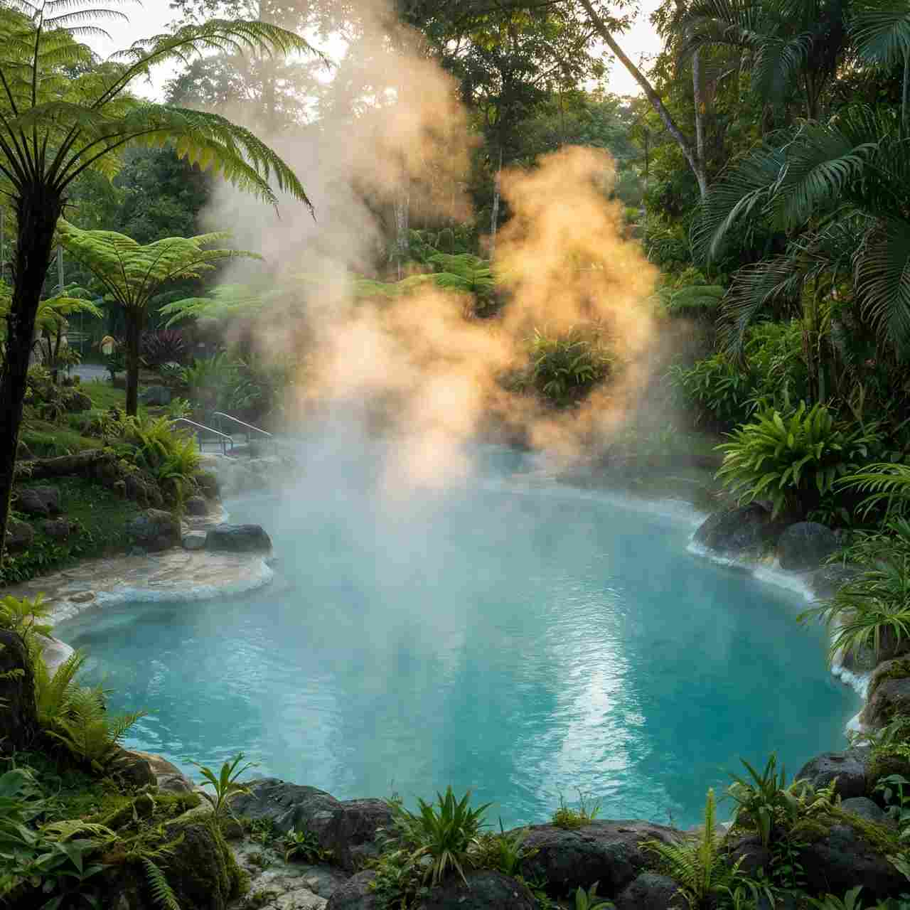

The Philippines sits on the Pacific Ring of Fire, and one of the gentler side effects is warm water rising out of the ground in places you can actually reach for a day. The best-known spots cluster around three mountains: Mt. Makiling in Laguna, Mt. Talinis in Negros Oriental and Mt. Hibok-Hibok in Camiguin. Add Mambukal in Negros Occidental, Puning near Mt. Pinatubo and Maquinit in Coron, and you have a soak for almost every region.
What surprises first-timers is the range. A hot spring here can mean a ₱50 stone pool run by the barangay, a forest reserve with a buffet lunch, or a rented villa with videoke and a private pool for twenty cousins. Knowing which kind you're walking into matters more than the temperature of the water.
Below, the springs are grouped by island, with what each place is like, how to get in, rough fees, and the habits that keep a soak pleasant rather than tiring.

Laguna: the Makiling hot spring belt
For anyone in Metro Manila, Laguna is the obvious first try. Calamba, Los Baños and Alaminos sit over a geothermal field fed by Mt. Makiling, and on a clear weekday the drive takes roughly an hour and a half.
Pansol, Calamba
Pansol is a long row of resorts on the national highway, and most of them pipe in spring water. Public pools such as Laguna Hot Spring Resort have charged about ₱110 to ₱250 at the gate. Private villas are priced per booking, not per head, and big-group places have quoted ₱17,000 to ₱25,000 for a 22-hour stay. Gas stoves and videoke are often extra.
Two habits help here. First, ask whether the pool is fed straight from the spring or heated by a boiler; both exist on the same street. Second, go on a weekday, when rates drop and you won't share the water with three reunions. Buses run from Buendia or Cubao to Calamba, and tricycles cover the last stretch. Smaller resorts tend to be cash only.
Hidden Valley Springs, Alaminos
Set in a 110-acre forest between Mt. Makiling and Mt. Banahaw, Hidden Valley feels more like a walk through the jungle than a day at a pool. Several pools of different warmth sit along stone paths, with small falls along the way. Most people come on a packaged day tour with a van from Metro Manila, a buffet lunch and a cottage included. Day rates have been around ₱2,250 to ₱2,500 per adult, with children usually at half price, but the resort adjusts them by season, so confirm when you book. Wear aqua shoes; the rocks are slick.
Los Baños and Calauan
If you've just come down from a Makiling hike, the smaller springs around Los Baños, near the UPLB campus, are the low-fuss option. Neighbouring Calauan has Silva Hot Spring, liked for its clear water. These suit a quick soak more than a full day out.
Negros: a big resort and two hill pools
Mambukal Resort, Murcia, Negros Occidental
Mambukal is the most developed hot spring resort in the Visayas, run by the provincial government about 30 to 45 minutes from Bacolod. The grounds hold seven waterfalls, a boating lagoon, a bat colony and three sulfur spring areas, one of them built in 1927. Park entry has been around ₱50, the regular hot pool about ₱50 for adults and ₱20 for kids for the whole day, and the Japanese-style ofuro dipping pools about ₱100. Rooms and cottages cost more. Weekends and holidays fill with local families, so go midweek if you want room to float. There's a cold pool fed by the falls if you like switching between warm and cool.
Red Rock Hot Spring, Valencia, Negros Oriental
Up in Valencia, roughly 20 minutes from Dumaguete City, Red Rock (Pulang Bato) is a stone pool shaded by coconut trees, with water tinted rusty by iron and sulfur in the rock. The air is cooler at that height, which makes the warm water feel better than it would on the coast. Entry has been around ₱50, and Pulang Bato Falls is close enough to pair with it.
Baslay Hot Spring, Dauin, Negros Oriental
Higher in the hills above Dauin, Baslay is a simple barangay-run set of pools with strongly sulfuric water and a long view of the coast on the ride up. Habal-habal is the easiest way there, since the final climb is steep. Food choices at the top are thin, so pack your own. If you're diving in Dauin, a morning at Baslay or Red Rock fits neatly into a no-dive day, and your resort can tell you which pools are open after heavy rain.
Camiguin: warm water under a volcano
Ardent Hot Spring sits at the foot of Mt. Hibok-Hibok in Barangay Tagdo, about 6 km from Mambajao, and it's the island's most visited soak. Volcano-warmed water runs into rock-lined pools at roughly 33°C to 39°C, depending on the season and the pool, so think warm bath rather than scald. Locals say it ran hotter years ago. Evening and early morning are the best times, when the air cools and the contrast is stronger. Fees are set by the local tourism office and have stayed low; the current rate is posted at the gate.
Two easy add-ons: Sto. Niño Cold Spring for a chilly plunge, and Tangub Hot Spring on the western shore, where warm water seeps up at the sea's edge and shows only at low tide. If you're timing a visit around the island's October fruit harvest, our Lanzones Festival guide covers what else is on that week.
Three more worth the detour
Puning Hot Spring, Pampanga. Reached by a 4x4 ride across lahar fields near Mt. Pinatubo, Puning has a string of pools plus sand and mud treatments. Packages with transfers and lunch have run from about ₱1,500 per person, so it's priced as an adventure day. It sits in the same landscape as the Pinatubo crater lake trek, though doing both in a single day is a lot.
Maquinit Hot Spring, Coron, Palawan. A rare saltwater hot spring, with pools edged by mangroves right by the sea. Sunset is the popular slot. Entry has been in the ₱200 to ₱300 range. Bring a light for the ride back.
Kawa hot bath, Antique. Not a natural spring at all, but a giant iron cauldron heated by firewood, with leaves floating in the water. It scratches the same itch in a very different way, and the Kawa bath and Mararison Island guide explains how it works.
Before you soak
Stay in for 15 to 20 minutes, then sit out and cool down. Kids, older travellers and anyone with high blood pressure should be especially strict about that. The hottest pool is usually the one nearest the source, often at the top of a terraced set.
Sulfur is kind to some skin and rough on eyes and pale swimwear. Wear a dark suit, keep your face out of the water, skip it if you have an open cut, and rinse off afterward.
Pack grippy slippers or aqua shoes, a quick-dry towel (cottages rarely include one), drinking water, a bag for wet clothes and sun protection for open sites like Puning and Maquinit. Small bills matter at barangay pools, where the gate fee and cottage are often paid separately and in cash.
Heavy rain can close pools or damage the roads up to Baslay and Mambukal, and fees change. A message to the municipal tourism page or your hotel the day before is the cheapest insurance you'll buy. And because many of these pools double as family picnic spots, leave the speaker at home and clean your cottage before you go.
Matching the spring to your trip
Short on time near Manila? Pansol for a cheap day, or Hidden Valley if you'd rather have lunch handled. Passing through Bacolod, Mambukal pairs well with its waterfalls. Staying in Dumaguete or Dauin, Red Rock and Baslay each make a relaxed half day. On Camiguin, Ardent at dusk followed by the cold spring the next morning works nicely. For something with more grit, Puning and its 4x4 ride.
Treat the spring as one part of the day rather than the whole point. A pool that turns out lukewarm still makes a good ending to a morning at Pulang Bato Falls or an afternoon in Camiguin's old church ruins.
Comments
No comments yet. Been here recently? Share a tip or ask a question.
Leave a Reply